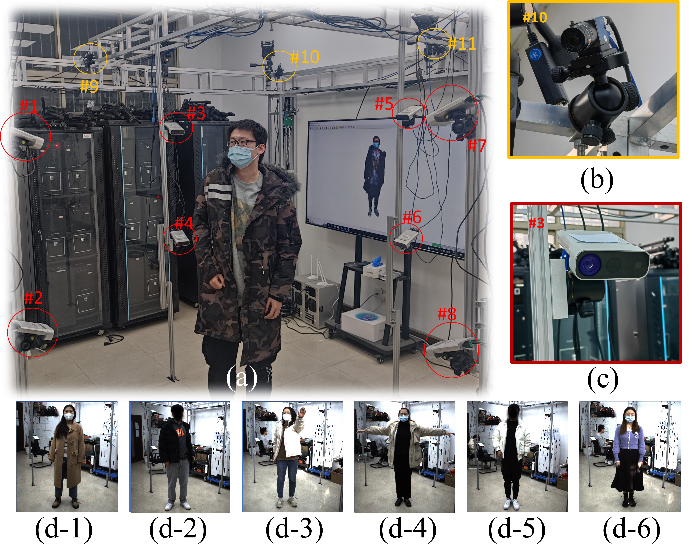

From research to systems
Projects
Research and engineering projects in 3D vision, motion capture, human pose estimation, and physical simulation.

Multi-camera capture setup and synchronized acquisition examples.Sep. 2022 – Present · Student Project Lead
Multi-camera Synchronized Capture System
A capture system that combines hardware trigger signals with software control for synchronized acquisition, distributed storage, and computation.
- Designed the system architecture, circuits, and multithreaded C++ software, and carried out system testing.
- Supports cross-brand cameras and RGB, depth, infrared, and tactile acquisition devices.
- Tested synchronization error below 1 ms and frame rates up to 120 fps.
- Applied to human motion capture, hand tracking, and dynamic scene reconstruction.
Sep. 2025 – May 2026 · Student Project Lead
Human Pose Estimation in Vehicle Cabins
A university research collaboration with Huawei on estimating 3D human pose from a monocular in-cabin camera.
- Designed, trained, and validated monocular human pose estimation algorithms.
- Focused on drivers and rear-seat passengers under occlusion and restricted viewpoints.
- Developed foundational perception methods for intelligent vehicle cabins.
Physics-based Simulation
XPBD Garment Simulation
A garment simulation project using XPBD, demonstrated on an animated human character.
The demo shows garment deformation as the character moves, with a focus on dynamic clothing behavior.
Research Support
Young S&T Talents Cultivation Project
Doctoral Student Program · China Association for Science and Technology (CAST)
Doctoral Innovation Capability Enhancement Program
Southeast University
Patent
A Multi-camera High-speed Synchronized Capture System and Method
一种多相机高速同步拍摄系统及拍摄方法
Inventors: Yangang Wang, Zhipeng Yu · Assignee: Southeast University
Patent no. ZL 2022 1 0203743.3 · Grant publication no. CN 114581284 B
Filed March 2, 2022 · Granted March 24, 2023